Adding transparency to a
gradient mesh creates attractive see-through effects, such as having a
background object viewed through stained glass, a membrane, or a
dragonfly wing. The possibilities are endless when you combine
transparency and mesh color blending in ways that excite a viewer’s
imagination and stimulate yours.
This particular tutorial is the third of a three-part chapter. Yes, the end
is in sight!
Be comfortable using the Undo function and the Zoom function.
The Undo function makes it very easy to retrace your steps if something
doesn’t look the way it should. The Zoom function allows for
deep, up-close viewing of fine-detail work – it’s a great
magnifying glass when needed, and a great telescope when also needed.
Do take breaks! Time passes with amazing speed when you get into the
flow.
In this tutorial, you’ll learn how to do the following:
Apply transparency to a gradient mesh.
Copy artwork from one Inkscape file to another.
Getting Started
In this tutorial, you’ll continue working the art file that you began
in the previous tutorial.
Start Inkscape if you exited it.
Download file Tutorial13C_end.svg and store
it in a convenient location on your computer. Note that the file image might
look like there are wing parts missing when viewing it in its Internet
source location. There are wing parts — you might just be
experiencing an incompatibility between the viewing software in your
browser and the flavor of svg (scalable vector graphics) that
Inkscape uses. Choose File > Open, and open the
Tutorial13C_end.svg file. The missing wing parts should appear
(along with everything else in the file).
Finished tutorial art file.
If you like, choose View > Zoom > Zoom Out to make the
finished artwork smaller, adjust the window size, and leave it on your
screen as you work. If you don’t want to leave the image open,
choose File > Close.
To begin working, File > Open file Butterfly.svg, which
you worked on in Tutorial 13A and 13B. If, however, you did not create
Butterfly.svg, then download file Tutorial13C_start.svg and store
it in a convenient location on your computer. Choose File > Open to open
it.
Start file for Tutorial 13C.
Choose File > Save As…, name the file Butterfly.svg,
and store it in a convenient location.
Adding transparency to a gradient mesh is very easy to do. In this section,
you will simulate the tinted see-through quality of a dragonfly’s
membrane wing.
To start, magnify the dragonfly. Select a wing with the Select tool (
) (we selected the lower left wing) and duplicate it using
<Ctrl>-D.
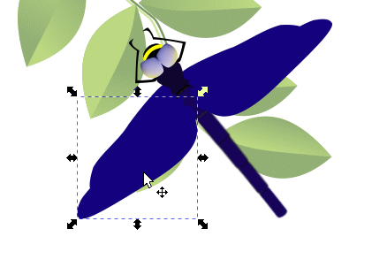
Magnifying the dragonfly and selecting a wing and
duplicating it.
Move the duplicated wing to the left and rotate it so it is oriented
horizontally in preparation for makiing a gradient mesh.
Moving and rotating the duplicated wing.
With the wing still selected, click on the Create and edit
meshes icon in the toolbox (). In the Mesh Tool
Controls Bar that appears, set Rows = 3, Columns =
2, and Smoothing = Bicubic.
Choose Objects > Fill and Stroke…, click on the Fill
tab, and click on the Mesh gradient icon ().
The dragonfly wing is now enclosed by a 3 row × 2 column gradient
mesh.
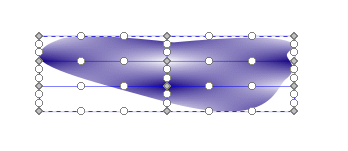
3 × 2 gradient mesh.
You will shortly move mesh points so they conform more to the overall
shape of the wing.
Move all the mesh handles in toward their respective mesh points.
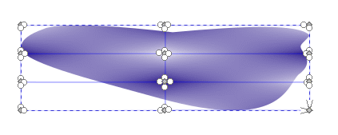
Moving mesh handles in toward their respective mesh
points.
Now move all the edge mesh points in so they just touch or lie just
outside the shape of the wing. Adjust mesh handles so external mesh lines
follow the curvature of the dragonfly wing outline without entering the
shape – you’ll cut off part of the wing, otherwise.
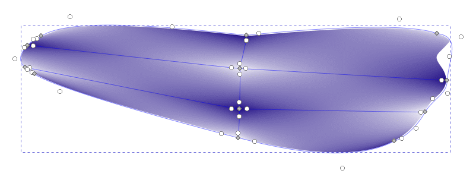
Moving mesh points and adjusting mesh handles so the mesh
conforms to the shape of the wing.
Group-select or singly select all mesh points in preparation for
coloring the wing.
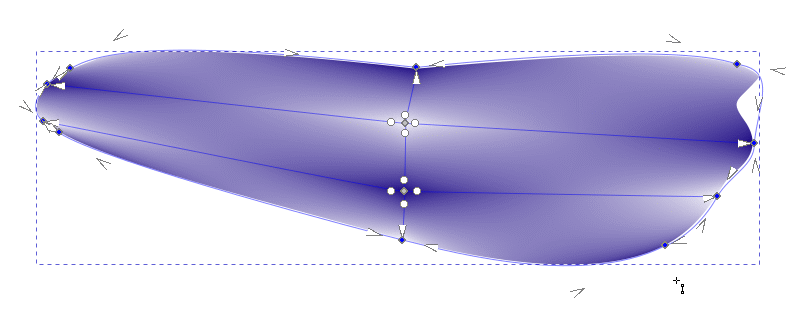
Selecting mesh points.
Color all the mesh points with the original deep purple of the wing.
Use the Dropper tool () to sample the color of the original wing.
Coloring all mesh points deep purple.
You will now add a highlight to the middle of the dragonfly wing.
Group-select the two inner mesh points with the Mesh tool
cursor ().
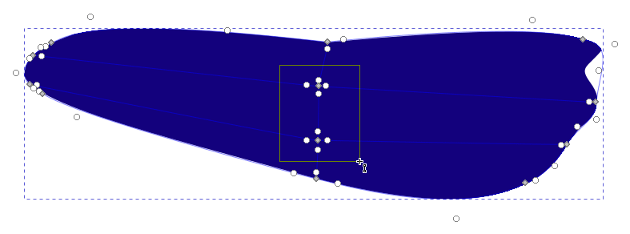
Selecting the inner two mesh points.
Click on the HSL button in the Fill panel and set the
lightness value L = 100.
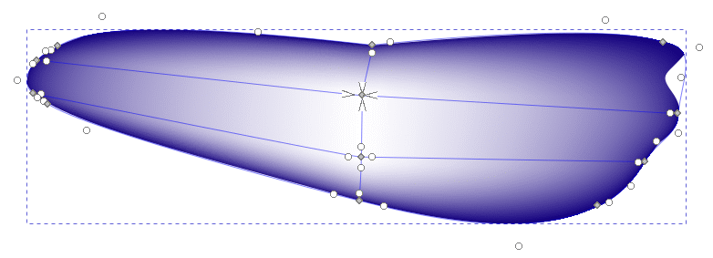
Creating a highlight.
You will now make the wing transparent. Set the opacity of the wing
to 29 percent.
Remember that opacity is just the opposite of tranparency. If an object
is less opaque, then it is more transparent.
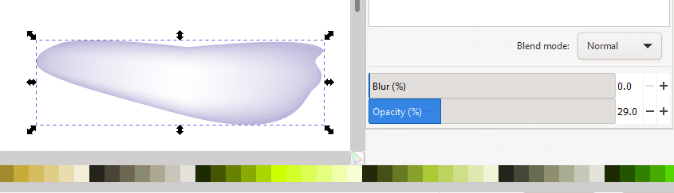
Setting the wing opacity to 29%.
Here is a neat technique for replacing the original dragonfly wing with
the new transparent version.
Select the original wing. Set its border to black to by
<Shift>-clicking on the black swatch in the Color palette at the
bottom of the work window.
Make the fill absolutely transparent by clicking on the none
swatch next to the black swatch.
Move the tranparent wing closer to the original wing and rotate it so
it has roughly the same orientation as the original.
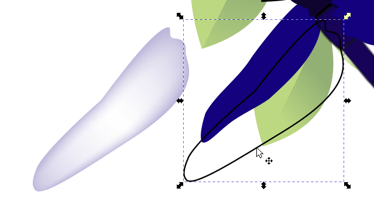
Original wing with no color fill and black outline.
The tranparent wing is moved close for easy orientation.
Move and fine-rotate the new wing so it fits precisely into the
black outline.
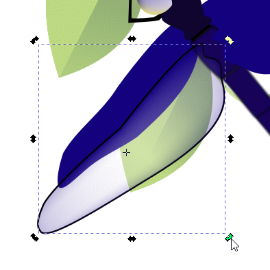
Precision emplacement of the new wing.
With the new wing object still selected, click on the Lower
selection one step icon () once or twice to place
it underneath the black outline.
Press the <Esc> key to deselect the wing. Then, select the black
edge of the wing and press the <Del> or <Delete> key to delete
it. If you accidentally delete the transparent wing instead, then press
<Ctrl>-Z to undo the mistake and press the Lower selection one
step icon again.
Click off the artwork to deselect the wing. Select the black edge of
the wing again. Press the <Del> or <Delete> key again. If the
black outline disappears, then good. Otherwise, repeat the previous few
steps until you successfully delete the black outline.
Select the lower right wing with the Select tool (
).
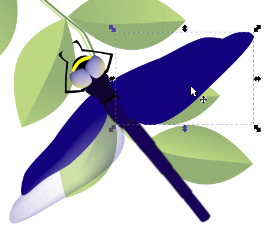
Dragonfly 13.
With the wing selected, set its border stroke to black and its color
to none.
Duplicate the lower left wing with <Ctrl>-D and make a
mirror-image of it using the FlipSelectedObjectsHorizontally tool
().
Move and rotate the duplicate transparent wing into place.
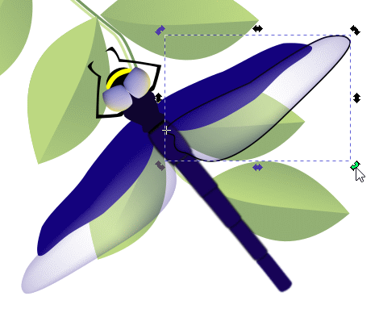
Moving and rotating the duplicate transparent wing into
place.
The original wing with the black border and transparent fill lies
underneath the colored wing in the image stack. With the colored wing
selected (reselect it if you deselected it), click on the Lower
selection one step icon () once or twice to put the colored wing underneath the
black border. Click off the artwork to deselect the wing, then click on the
black border and press the <Del> or <Delete> key. If you
accidentally delete the colored wing, then undo the mistake with
<Ctrl>-Z and repeat the previous couple of steps until you
successfully delete the black border.
Lower right wing emplaced, no border.
You will now repeat all the previous steps to create transparent
upper wings.
Duplicate and move both upper wings to the left of the dragonfly. Make
3 × 2 gradient meshes for both wings, color them with the original
deep purple color, and give them the central highlight, just as you had
done with the lower pair of wings.
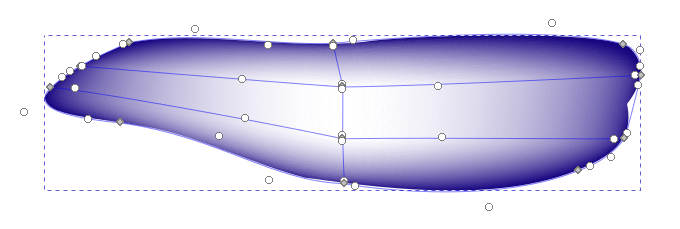
Dragonfly 16.
Marquee-select the two wings with the Select tool ()
and set their opacity to Opacity (%) = 29, just as you had done
earlier.
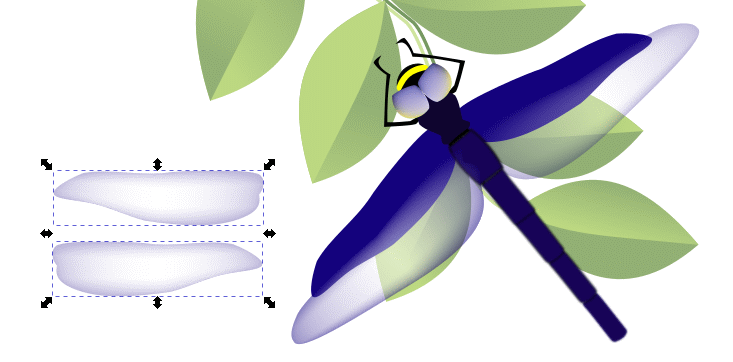
Dragonfly 17.
Group-select both original upper wings using <Shift>-click,
set their borders to black by clicking on the black swatch in the Color
palette, and set their color fill to none.
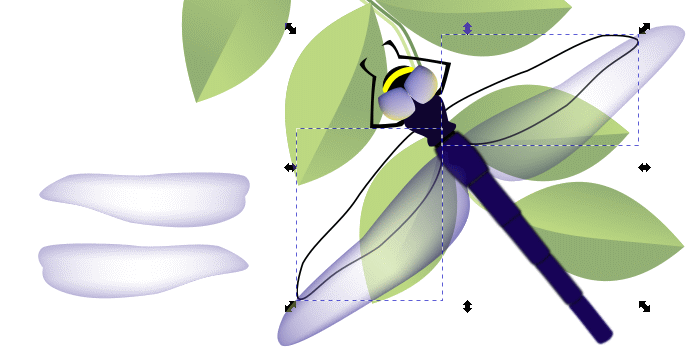
Preparing the original wings for replacement.
Position the wings and delete the black borders as you had done
earlier.
Emplacing the two upper wings and deleting the black
borders.
You will emplace the two butterflies you had created earlier onto the
dragonfly-and-leaves image.
Go to the Butterfly.svg file that you opened at the beginning of
this tutorial. Choose Edit > Select All to select both butterflies.
Choose Edit > Copy to copy the two butterfly images to your
computer’s clipboard.
Selecting both butterflies.
Switch to the Dragonfly.svg Inkscape window. Position the
cursor to the right of the artboard and press <Ctrl>-V to paste the
butterflies on that side.
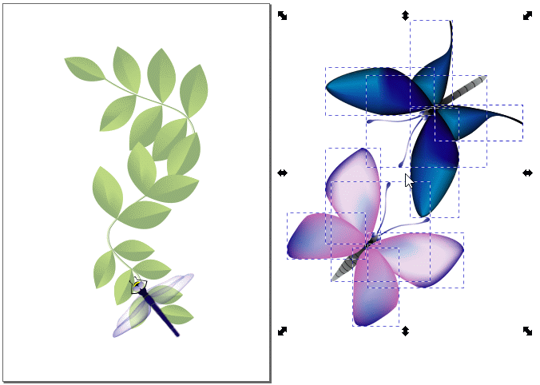
Pasting the butterflies next to the dragonfly artboard.
The image is pasted where the cursor is located (now in the middle of
the butterfly image).
Group-select the butterflies and move them onto the
dragonfly-and-leaves artwork. It would be wise to make each butterfly its
own group before moving. They are now ungrouped body parts, wings, and
legs that can easily and accidentally separate upon being moved and
rescaled.
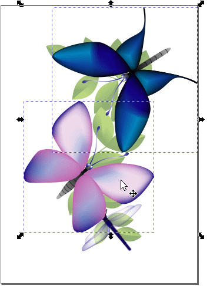
Group-moving the butterfies over the dragonfly-and-leaves
artwork.
The lower butterfly is partially covering the dragonfly.
<Ctrl>-drag a sizing handle to resize the two butterflies while
maintaining the aspect ratio. Move them until they are positioned where you
would like them.
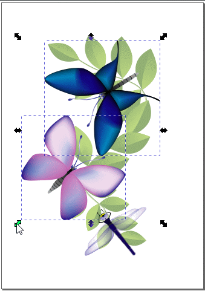
Moving and rescaling the butterfies.
Choose Edit > Deselect to deselect the artwork.
Finished artwork.
File > Save. File > Quit to exit Inkscape.
You have now learned how to create and modify mesh gradients, and finally,
how to add transparency to objects that have mesh gradients attached to
them.
Review Questions
How do you add transparency to a mesh gradient?
Can you add transparency to multiple objects?
Review Answers
You add transparency to an mesh gradient object just like adding
transparency to any other object. Choose Objects > Fill and
Stroke…, click on the Fill tab, click on the Mesh
gradient icon (), and adjust the Opacity (%) bar to the
percent opacity that you want.
Yes, you can group-select multiple objects using the marquee-select
technique or by <Shift>-click on disparate objects. You then set the
transparency for all the selected objects. They will all have the same
degree of transparency.


{kind=link}
{kind=link}
 ) (we selected the lower left wing) and duplicate it using
<Ctrl>-D.
) (we selected the lower left wing) and duplicate it using
<Ctrl>-D.
 ). In the Mesh Tool
Controls Bar that appears, set Rows = 3, Columns =
2, and Smoothing = Bicubic.
). In the Mesh Tool
Controls Bar that appears, set Rows = 3, Columns =
2, and Smoothing = Bicubic. ).
The dragonfly wing is now enclosed by a 3 row × 2 column gradient
mesh.
).
The dragonfly wing is now enclosed by a 3 row × 2 column gradient
mesh.
 ).
). ) once or twice to place
it underneath the black outline.
) once or twice to place
it underneath the black outline. ).
).